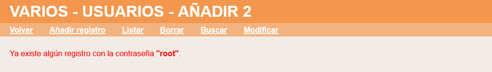
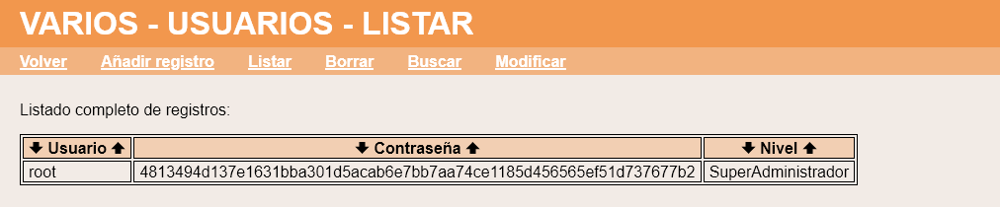
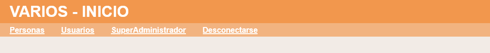
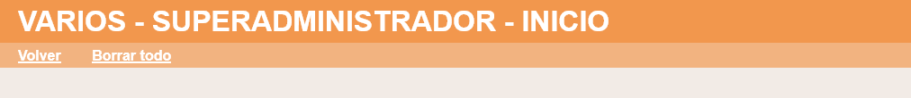
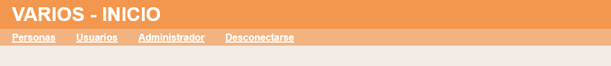
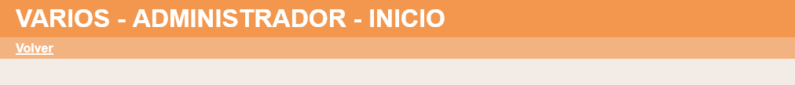

Exámenes - Bases de datos - Varios
En este ejercicio se debe ampliar la aplicación proporcionada en la plantilla añadiendo dos funcionalidades.
- Al crear un nuevo usuario no se podrá utilizar una contraseña ya utilizada por otro usuario.
- Habrá una nueva categoría de usuario Superadministrador, que será el único que puede borrar la base de datos.
Varios - Comentarios
- Al crear un nuevo usuario no se podrá utilizar una contraseña ya utilizada por otro usuario.

- Habrá una nueva categoría de usuario Superadministrador. El usuario inicial que se incluye en la tabla Usuarios tendrá categoría SuperAdministrador.

- Los usuarios Superadministradores son los únicos que pueden borrar la base de datos.


- Los usuarios Administradores podrán editar la tabla de usuarios y la tabla de personas, pero no borrar todo.

